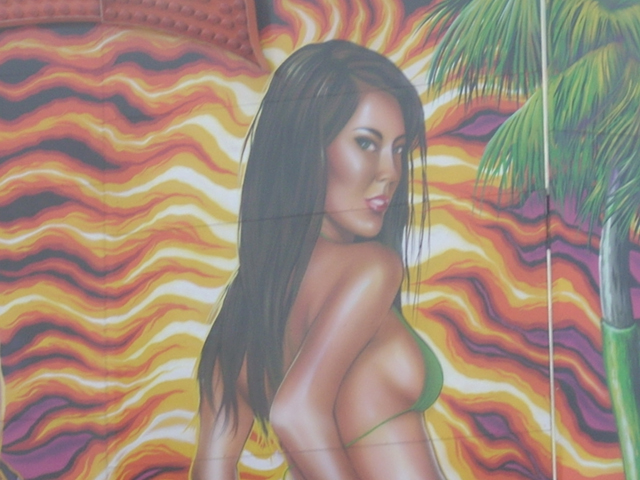
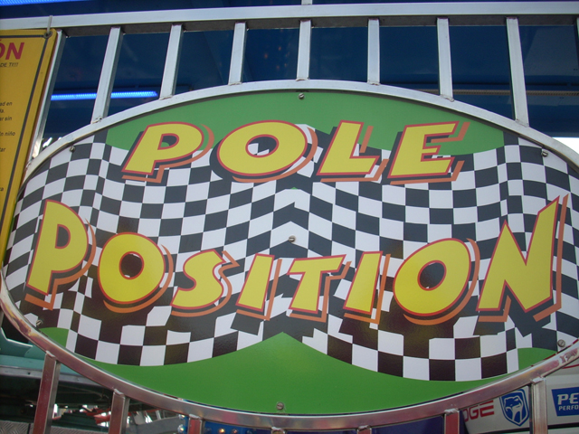

Ventura County Fair 2008
Ok, That time of year is here once again. The fair is back in town. While it was good, I still have six simple words to say to them. "BRING BACK THE GOD DAMN ZIPPER!!!" But oh well. Lets just enjoy this years fair.
Now that we're at the fair, lets go on some wacky flat rides as that's what the fairs all about.
Hey Knotts! Look what the Ventura County Fair can do with their Top Spin!
Time for the scrambler on steroids.
This ride is just awsome!!!
You remind me of someone.
Up next, the ride that looks like a flipping pirate ship.
Does this look like a ride you love Andrew?
Uh oh. You better get your bible out Andrew as we're about to ride the Chairswings!
"Dude, Bibles are so 2005."
Here's a Flashback to the old days of SFMM.
 New at the fair this year is the one and only Wacky Worm!
New at the fair this year is the one and only Wacky Worm!
Cha Ching! Credit #99.
You kids better be prepared for the big suprise on the wacky worm.
 Yes, that's right. There's an onride photo of the Wacky Worm.
Yes, that's right. There's an onride photo of the Wacky Worm.
Wackiness on the Wacky Worm!
I feel dirtier than a mexican slut with 9 STDs.
 Last year, the rule was all updates had to show giant bubbles. This year, the rule is that all updates are required to have a photo of Yellow Seedless Watermelon.
Last year, the rule was all updates had to show giant bubbles. This year, the rule is that all updates are required to have a photo of Yellow Seedless Watermelon.
 To see just how crappy Zombie is, click here.
To see just how crappy Zombie is, click here.
 Time to kick some ass on the slide.
Time to kick some ass on the slide.
"Ahh Damn It!!! Oh well! I'll kick your ass next time!!!"
Aside from the wacky worm, they also have a new fun house.
The new funhouse includes moving floors...
A Space Mtn effect that made Andrew dizzy...
And BUBBLES!!! TONS AND TONS OF BUBBLES!!!!
Magnum was running great this year. We got 5 flips in a row! I'm not sure what made it so hard to flip last year, but it was great this year!

Look at that Sideboob.
The Giant Wheel is Giant my ass.
This slide is cool as it has a fake helix of death.

Hey! I thought you were supposed to go to Castle Park and never be at this fair ever again! (Damn you RCDB for feeding me lies.)
 Pole Position just being it's typical crappy self.
Pole Position just being it's typical crappy self.
Since I was at the fair with Andrew, We HAD to ride the Pirate Ship.
This is better than sex.
This isn't as bad as it looks.
Let's go ride a good frisbee.
Unless I go on Delarium @ Kings Island, This'll be the best frisbee I'll ride all year.
Just look at Hard Rock and it's badass self. Now go to your fair, hope they have it, if they do, go ride it.
And here's the one that replaced the Zipper.
It looks like I'll be stuck with this stupid ride forever.
 Did you seriously think we were going to go to the fair and not ride Mega Drop?
Did you seriously think we were going to go to the fair and not ride Mega Drop?
Here's this years view from Mega Drop.
I seriously love this ride.
We'll end this update at the Pinks Hot Dog Stand. They are really good. Good enough to give Nathans a run for their money.
Home